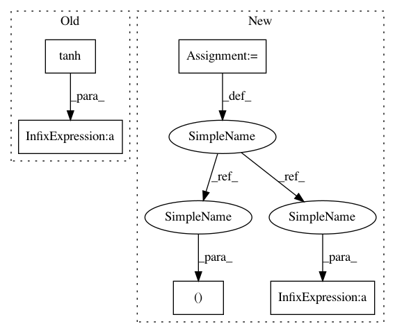

ee235aff686c5ec1048138d799107801df20b819,sac/algos/sac.py,SAC,_init_actor_update,#SAC#,224
Before Change
self._vf_params = self._vf.get_params_internal()
log_target_t = self._qf.get_output_for(
self._obs_pl, tf.tanh(policy_dist.x_t), reuse=True) // N
corr = self._squash_correction(policy_dist.x_t)
if self._reparameterize:
kl_loss_t = tf.reduce_mean(log_pi_t - log_target_t - corr)
else:
kl_loss_t = tf.reduce_mean(log_pi_t * tf.stop_gradient(
log_pi_t - log_target_t - corr + self._vf_t))
self._vf_loss_t = 0.5 * tf.reduce_mean(
(self._vf_t - tf.stop_gradient(log_target_t - log_pi_t + corr))**2)
policy_train_op = tf.train.AdamOptimizer(self._policy_lr).minimize(
loss=kl_loss_t + policy_dist.reg_loss_t,
After Change
of the value function and policy function update rules.
actions, log_pi = self._policy.actions_for(observations=self._observations_ph,
with_log_pis=True)
self._vf_t = self._vf.get_output_for(self._observations_ph, reuse=True) // N
self._vf_params = self._vf.get_params_internal()
if self._regularize_actions:
D_s = actions.shape.as_list()[-1]
policy_prior = tf.contrib.distributions.MultivariateNormalDiag(
loc=tf.zeros(D_s), scale_diag=tf.ones(D_s))
policy_prior_log_probs = policy_prior.log_prob(actions)
else:
policy_prior_log_probs = 0.0
log_target = self._qf.get_output_for(
self._observations_ph, actions, reuse=True) // N
policy_kl_loss = tf.reduce_mean(log_pi * tf.stop_gradient(
log_pi - log_target + self._vf_t - policy_prior_log_probs))
if self._reparameterize:
kl_loss_t = tf.reduce_mean(log_pi_t - log_target_t - corr)
In pattern: SUPERPATTERN
Frequency: 3
Non-data size: 5
Instances
Project Name: rail-berkeley/softlearning
Commit Name: ee235aff686c5ec1048138d799107801df20b819
Time: 2018-05-22
Author: kristian.hartikainen@gmail.com
File Name: sac/algos/sac.py
Class Name: SAC
Method Name: _init_actor_update
Project Name: rail-berkeley/softlearning
Commit Name: ee235aff686c5ec1048138d799107801df20b819
Time: 2018-05-22
Author: kristian.hartikainen@gmail.com
File Name: sac/algos/sac.py
Class Name: SAC
Method Name: _init_actor_update
Project Name: openai/pixel-cnn
Commit Name: a855511d35e70ac1cfe605ab6a9b0eb7c28171da
Time: 2016-11-09
Author: tim@Tims-MacBook-Pro.local
File Name: pixel_cnn_pp/nn.py
Class Name:
Method Name: aux_gated_resnet
Project Name: openai/pixel-cnn
Commit Name: a855511d35e70ac1cfe605ab6a9b0eb7c28171da
Time: 2016-11-09
Author: tim@Tims-MacBook-Pro.local
File Name: pixel_cnn_pp/nn.py
Class Name:
Method Name: gated_resnet